Spatio-Temporal Data Hackathon
Spatio-Temporal / NEON Data Workshop
Leah Wasser
2015-10-24
- Overview
- P1. The Geospatial Landscape
- P2. Work With Raster and Vector Data In R
- Download the Data
- P2b. Working with Raster Time Series Data
- P3. Project Organization & Metadata
- P4. Working with CSV format Time Series Data
- P5. Data Viz
- P7. An automated workflow
- Remote Sensing Workshop
<h3 >Contents</h3>- Auto generated table of contents {:toc}
Overview
Persona
Jessica, is putting together her dissertation proposal as a part of her PHD program in ecology at University of Boulder, CO. She is interested in exploring some of her field sites to understand how phenology of vegetation (greening in the spring summer and senescence in the winter, varies across multiple sites and through time. Her PhD advisor has given her some data for a few sites which have very different vegetation communities including Harvard Forest (Massachusetts) and San Joachin Experimental Range (California). The data include:
1.Vegetation greenness (NDVI) derived from the Landsat Satellite (30 meter resolution) for both sites for 2 years derived from the landsat sensor in a raster format. 2. Some high resolution images of the sites. 3. A canopy height model showing tree height 4. A DEM (digital elevation model) showing topography. 5. Site temperature, PAR (Photosynthetic active radiation), Soil temperature, Precipitation and daylength for each day over those two years
Jessica has done some of the things above using her favorite open source GIS tool - QGIS. However that workflow makes it difficult to process and look at multiple years worth of data. She wants to create an efficient reproducible workflow that she can use as she collects data for more sites and years over time to support her dissertation work. She has never opened shapefiles and rasters in a non-gui environment. She also understands what a raster is but doesn’t know where the ndvi data come from.
Jessica would like to create the following outputs to better understand her project:
- Plots of temperature, precipitation, PAR and daylength over the 2 year time period (metrics which related to the greening and browning of plants) compared to NDVI (greenness).
- Basemaps of her site showing
- The location of the tower that measured the above variables and imagery showing what the site look like. tree height
- Topography
- A time series animation of NDVI for both sites that she can post on her blog.
P1. The Geospatial Landscape
stuff here
P2. Work With Raster and Vector Data In R
Goal: Participants will know how to import raster and vector data in R, view metadata / attributes of each in R.
Learning Objectives:
- Understand the difference between vector and raster data (could be covered in P1)
- Know how to open up a shapefile in R (brief explanation of shapefile)
- Understand point, line and polygons
- Know how to open a raster data file in R (brief explanation of geotiff)
- Know how to create a basic map of a raster with a shapefile overlayed.
Below is some code to look at the data and get this module started.. lots more to add!
Download the Data
DOWNLOAD NEON Spatio-Temporal Teaching Dataset
About the data – more to come here.
#work with rasters
library(raster)## Loading required package: sp#best for importing shapefiles
library(rgdal) ## rgdal: version: 1.0-4, (SVN revision 548)
## Geospatial Data Abstraction Library extensions to R successfully loaded
## Loaded GDAL runtime: GDAL 1.11.2, released 2015/02/10
## Path to GDAL shared files: /Library/Frameworks/R.framework/Versions/3.2/Resources/library/rgdal/gdal
## Loaded PROJ.4 runtime: Rel. 4.9.1, 04 March 2015, [PJ_VERSION: 491]
## Path to PROJ.4 shared files: /Library/Frameworks/R.framework/Versions/3.2/Resources/library/rgdal/proj
## Linking to sp version: 1.1-1#plotting
library(ggplot2)
options(stringsAsFactors = FALSE)
#set the data directory
dd = '../1_WorkshopData'First plot the basemap to see where the tower boundary is.
Note, this will require opening up the geotiff imagery for the site. Then plotting
CRS: UTM ZONE 18N FOR HARVARD CRS: UTM ZONE 11N for SJER
#import imagery
chm <- raster(file.path(dd, 'NEON_RemoteSensing/HARV/CHM/HARV_chmCrop.tif'))
#plot chm (make map?)
plot(chm, main="NEON Canopy Height Model (Tree Height)\nHarvard Forest")
#customize legend, add units (m), remove x and y labelsopening a multi-band image is different from opening a single band image
We need to use the stack command for this…
more here..
################### IMPORT MULTI BAND RASTER (image) #########################
#note that when you import a multi band image you have to import it as a stack
#rather than a raster... this might be worth pointing out in the lesson.
#it could be good to start with just a single band raster like a CHM, DEM etc?
baseImage <- stack(file.path(dd, 'NEON_RemoteSensing/HARV/HARV_RGB_Ortho.tif'))
#plot the image for the site
#is there a way to plot RGB and add titles, etc (data viz group??)
plotRGB(baseImage,r=1,g=2,b=3,
main="Harvard Tower Site")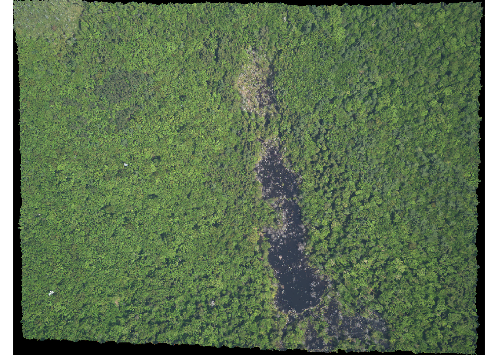
vector data are different from raster
More here on vectors…
Open a point, line and polygon layer here. NOTE: need to add line and point!
ogr is better than maptools (IMO) :) … why
#Import the shapefile
#note: read ogr is preferred as it maintains prj info
squarePlot <- readOGR(file.path(dd, "boundaryFiles/HARV/"),"HarClip_UTMZ18")## OGR data source with driver: ESRI Shapefile
## Source: "../1_WorkshopData/boundaryFiles/HARV/", layer: "HarClip_UTMZ18"
## with 1 features
## It has 1 fields#view attributes
squarePlot## class : SpatialPolygonsDataFrame
## features : 1
## extent : 732128, 732251.1, 4713209, 4713359 (xmin, xmax, ymin, ymax)
## coord. ref. : +proj=utm +zone=18 +datum=WGS84 +units=m +no_defs +ellps=WGS84 +towgs84=0,0,0
## variables : 1
## names : id
## min values : 1
## max values : 1#view crs
crs(squarePlot)## CRS arguments:
## +proj=utm +zone=18 +datum=WGS84 +units=m +no_defs +ellps=WGS84
## +towgs84=0,0,0#view extent
extent(squarePlot)## class : Extent
## xmin : 732128
## xmax : 732251.1
## ymin : 4713209
## ymax : 4713359#look at the polygon
plot(squarePlot, col="purple")#look at the polygon on top of the imagery
plotRGB(baseImage)
#add the plot boundary to the image. Make it a transparent box with a thick outline
#Note: leah needs to fix the crop box to make it UTM z18 friendly! it will happen.
plot(squarePlot, col="yellow", add=TRUE)
#open a line shapefile
#NOte: this file has attributes so the viz group should work on
#making maps with multi attribute shapefiles
#adding legends, etc
roads <- readOGR(file.path(dd, "boundaryFiles/HARV/"),"HARV_roadStream")## OGR data source with driver: ESRI Shapefile
## Source: "../1_WorkshopData/boundaryFiles/HARV/", layer: "HARV_roadStream"
## with 13 features
## It has 15 fieldsplot(roads, col="yellow", add=TRUE)
#add a point
tower <- readOGR(file.path(dd, "boundaryFiles/HARV/"),"HARVtower_UTM18N")## OGR data source with driver: ESRI Shapefile
## Source: "../1_WorkshopData/boundaryFiles/HARV/", layer: "HARVtower_UTM18N"
## with 1 features
## It has 14 fields#make this a cooler symbol
plot(tower, col="red", add=TRUE)
Crop the Base Image to the AOI
This is the area used to clip the NDVI data from. We can expand it a bit. Concerned with size but i think a bit larger could be ok.
#crop the image to the plot boundary?
#note that crop just uses the extent - not that actual shape of the polygon.
new <- crop(baseImage,squarePlot)
plotRGB(new, axes=F,main="RGB image cropped")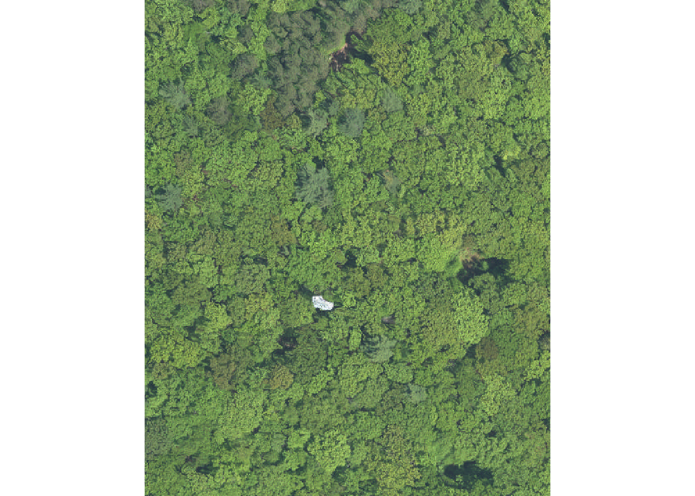
#not sure how to add a title to plotRGB??
#export geotiff
#write the geotiff - change overwrite=TRUE to overwrite=FALSE if you want to
#make sure you don't overwrite your files!
out_tif = sprintf('%snew.tif', img_path)
writeRaster(new, out_tif, overwrite=TRUE)P2b. Working with Raster Time Series Data
Goal: Participants will know how to work with, extract values from and plot a set of rasters in R.
Learning Objectives:
- Know how to open a set of rasters in R as a raster stack
- Know how to plot a raster stack.
- Know how to extract values from a raster
- Know how to extract multiple values from a raster and plot it using GGPLOT.
Import the NDVI time series.
NOTE: we could crop these to a larger boundary. right now they are about 1.5mb
a tile…
#define the path to write tiffs
#the other time series for the california sites is in NDVI/D17
#Note: if it's best we can also remove the nesting of folders here. I left it
#just to remember where i got the data from originally! i can just include a note to myself.
ndvi.tifPath <- file.path(dd, "Landsat_NDVI/HARV/2011/ndvi/")
#open up the cropped files
#create list of files to make raster stack
allCropped <- list.files(ndvi.tifPath, full.names=TRUE, pattern = ".tif$")
#create a raster stack from the list
rastStack <- stack(allCropped)
#layout(matrix(c(1,1,2,3), 2, 2, byrow = TRUE))
#would like to figure out how to plot these with 2-3 in each row rather than 4
plot(rastStack, zlim=c(1500,10000),nc=3)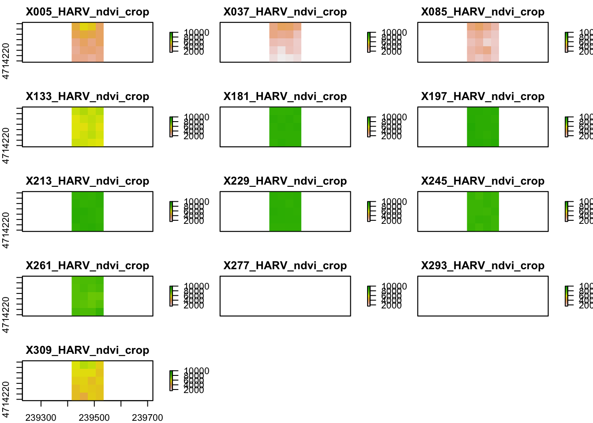
#VIZ people can show us how to customize the title on the plots
#Viz people can show us how to adjust the LAYOUT so the figures
#are easier to read...
#adjust the layout
#par(mfrow=c(7,2))
#not sure how to plot fewer columns without throwing errors
#plot histograms for each image
hist(rastStack,xlim=c(1500,10000))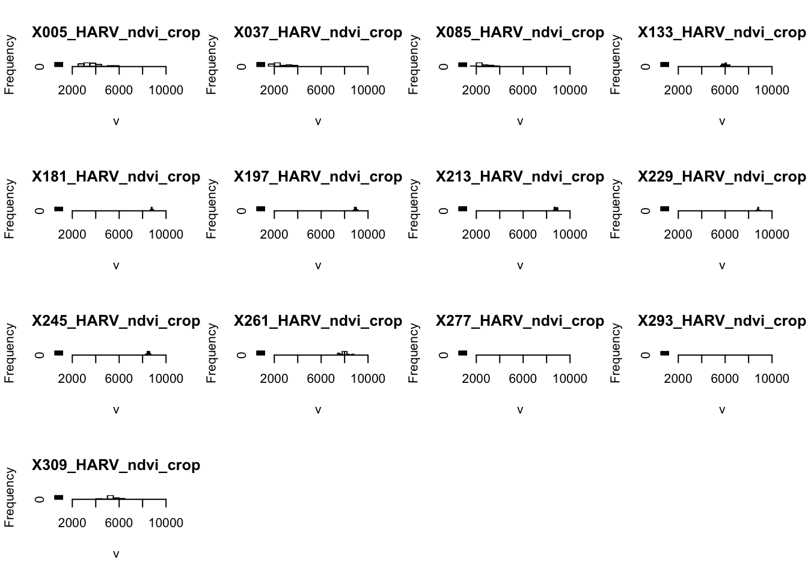
Data Cleaning
It looks like something is weird with the data… let’s have a closer look at the original images
#open up the cropped files
#create list of files to make raster stack
rgb.allCropped <- list.files("Landsat_NDVI/HARV/2011/RGB/", full.names=TRUE, pattern = ".tif$")
#create a layout
par(mfrow=c(4,4))
#plot all images
#would be nice to label each one but not sure how with plotRGB
for (aFile in rgb.allCropped){
ndvi.rastStack <- stack(aFile)
plotRGB(ndvi.rastStack, stretch="lin")
}
#reset layout
par(mfrow=c(1,1))Next calculate NDVI
More here…
#create data frame, calculate NDVI
ndvi.df.HARV <- as.data.frame(matrix(-999, ncol = 2, nrow = length(allCropped)))
colnames(ndvi.df.HARV) <- c("julianDays", "meanNDVI")
i <- 0
for (crop in allCropped){
i=i+1
#open raster
imageCrop <- raster(crop)
#calculate the mean of each
ndvi.df.HARV$meanNDVI[i] <- cellStats(imageCrop,mean)
#grab julian days
ndvi.df.HARV$julianDays[i] <- substr(crop,nchar(crop)-21,nchar(crop)-19)
}
#add and populate a year column to the data frame
ndvi.df.HARV$yr <- as.integer(2009)
#add and populate a site column to the data frame
ndvi.df.HARV$site <- "HARV"PLOT NDVI for 2011
NOTE: will add tiles for 2009-2010 - have 30 years but that is a lot! ###should we expand the extent or not?
Now, let’s plot NDVI for one year
NOTE: there are some bad points in the data. this is because of extreme cloud cover in the imagery. I will try to make a few images we can look at to see that these scenes are bad. It might be good for the remote sensing group to cover this.
NOTE - there is a DC lesson on GGPLOT that we might be able to
adapt to this!
##plot stuff
#need to figure out the best plotting method to connect the dots! Or a better input format object
#we also should remove bad points in this layer and explain why the points are bad
#cloud cover)
ggplot(ndvi.df.HARV, aes(julianDays, meanNDVI)) +
geom_point(size=4,colour = "blue") +
ggtitle("NDVI for HARVARD forest 2011\nLandsat Derived") +
xlab("Julian Days") + ylab("Mean NDVI") +
theme(text = element_text(size=20))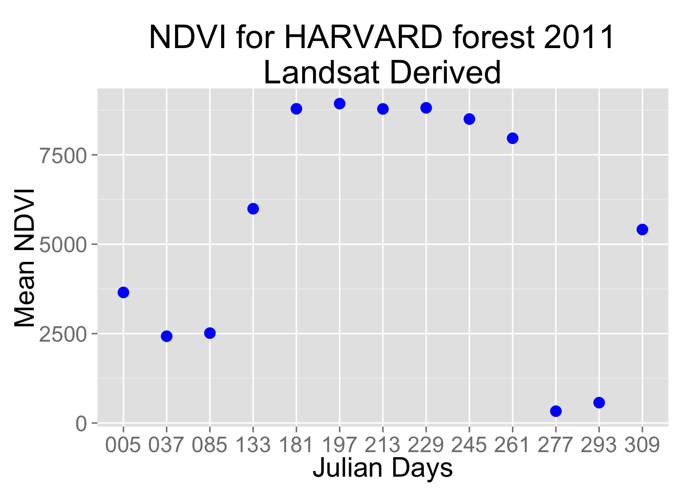
Below is the same analysis for another site for the same time period!
THe data are for california field site san Joachin experimental range. This might be an option additional activity to compare the two! Note that hte NDVI values are generally lower as it’s a scrubby medit environment. We can include photographs of the sites as well! The data are very interesting!
#define the path to write tiffs
tifPath <- file.path(dd, "Landsat_NDVI/SJER/2011/ndvi/")
#open up the cropped files
#create list of files to make raster stack
allCropped <- list.files(tifPath, full.names=TRUE, pattern = ".tif$")
#create a raster stack from the list
rastStack <- stack(allCropped)
#layout(matrix(c(1,1,2,3), 2, 2, byrow = TRUE))
#would like to figure out how to plot these with 2-3 in each row rather than 4
plot(rastStack, zlim=c(1500,10000),nc=3)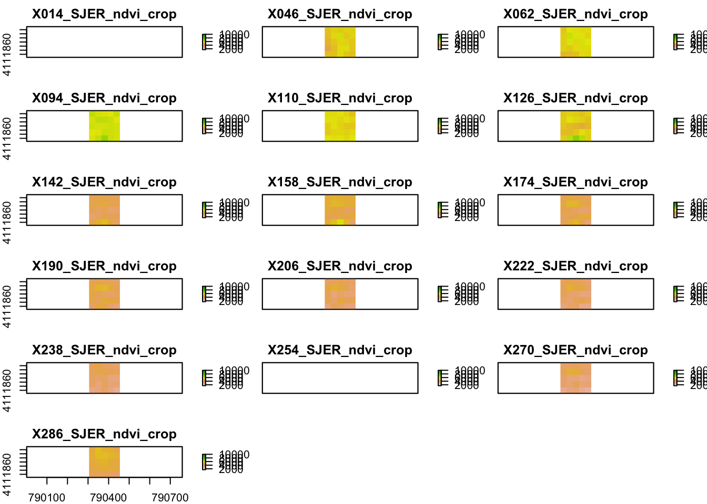
#adjust the layout
#par(mfrow=c(7,2))
#not sure how to plot fewer columns without throwing errors
#plot histograms for each image
hist(rastStack,xlim=c(1500,10000))## Warning in .local(x, ...): only the first 16 layers are plotted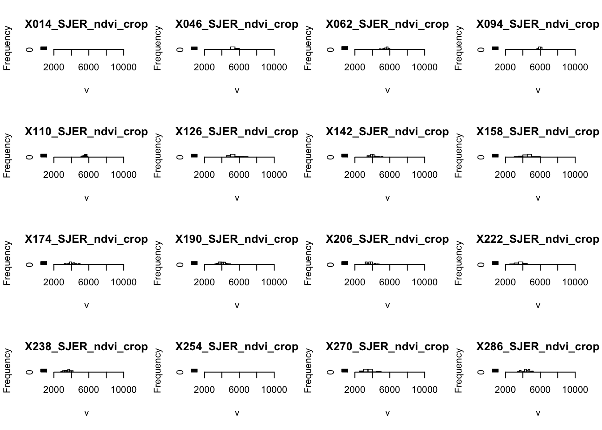
#create data frame, calculate NDVI
ndvi.df.SJER <- as.data.frame(matrix(-999, ncol = 2, nrow = length(allCropped)))
colnames(ndvi.df.SJER) <- c("julianDays", "meanNDVI")
i <- 0
for (crop in allCropped){
i=i+1
#open raster
imageCrop <- raster(crop)
#calculate the mean of each
ndvi.df.SJER$meanNDVI[i] <- cellStats(imageCrop,mean)
#grab julian days
ndvi.df.SJER$julianDays[i] <- substr(crop,nchar(crop)-21,nchar(crop)-19)
}
ndvi.df.SJER$yr <- as.integer(2011)
ndvi.df.SJER$site <- "SJER"
#plot NDVI
ggplot(ndvi.df.SJER, aes(julianDays, meanNDVI)) +
geom_point(size=4,colour = "blue") +
ggtitle("NDVI for SJER 2011\nLandsat Derived") +
xlab("Julian Days") + ylab("Mean NDVI") +
theme(text = element_text(size=20))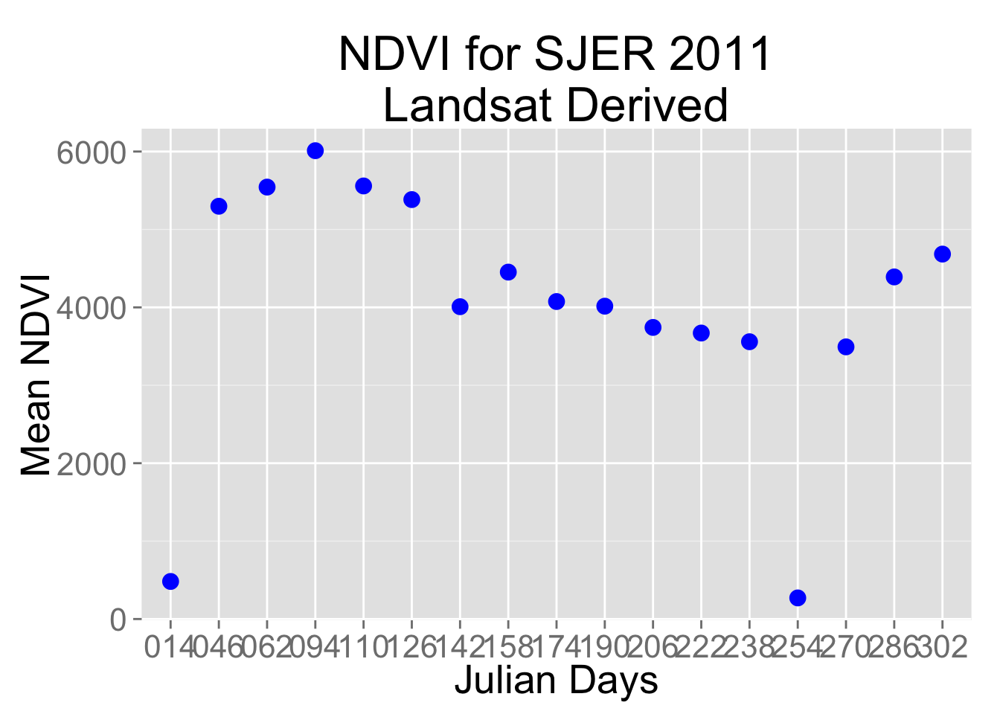
Animated Gifs of Time Series in R!
Below is simple code to create an animation from a rasterstack.
#create animation ot the NDVI outputs
library(animation)
path_gif = sprintf("%sndvi.gif", img_path)
#if(!file.exists("ndvi.gif")) { # Check if the file exists
saveGIF(
for (i in 1:length(allCropped)) {
plot(rastStack[[i]],
main=names(rastStack[[i]]),
legend.lab="NDVI",
col=rev(terrain.colors(30)),
zlim=c(1500,10000) )
},
movie.name = 'temp.gif',
ani.width = 300, ani.height = 300,
interval=.5)## Executing:
## 'convert' -loop 0 -delay 50 Rplot1.png Rplot2.png Rplot3.png
## Rplot4.png Rplot5.png Rplot6.png Rplot7.png Rplot8.png
## Rplot9.png Rplot10.png Rplot11.png Rplot12.png Rplot13.png
## Rplot14.png Rplot15.png Rplot16.png Rplot17.png 'temp.gif'
## Output at: temp.gif## [1] TRUE#}
res = file.copy('temp.gif', path_gif, overwrite=T)
res = file.remove('temp.gif')The animated gif!
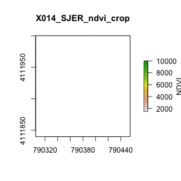
Time series for NDVI for 2011 at Harvard Forest #note it is easy to get more years as well!
#Compare the two sites
ndvi.df <- rbind(ndvi.df.SJER,ndvi.df.HARV)
#plot NDVI
#make it look prettier
ggplot(ndvi.df, aes(julianDays, meanNDVI, colour=site)) +
geom_point(size=4,aes(group=site)) + geom_line(aes(group=site))+
ggtitle("NDVI HARV vs. SJER 2011\nLandsat Derived") +
xlab("Julian Days") + ylab("Mean NDVI") +
theme(text = element_text(size=20))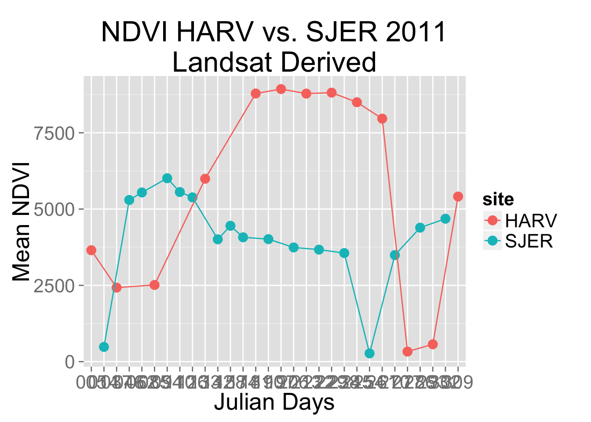
#the end of this section P3. Project Organization & Metadata
Goal: Participants will understand how to organize a project with geospatial data and what metadata are most important to look at.
Learning Objectives:
- Know how to look up and grab key attributes of a shapefile in R (extent, CRS)
- Know how to look up and grab key attributes of a raster in R (extent, CRS)
- Understand CRS (coordinate reference systems)
- Know how to reproject files when they don’t line up
- Understand the files associated with a shapefile.
#might have stuff about storing data
#stuff on the files associated with a shapefile
#in this case, our data are organized by
#metric or type of data and then location then year.
#thinking about organizing data is important.
#crs and metadata in the geospatial world is also important...P4. Working with CSV format Time Series Data
Goal: Participants will know how to open, clean and plot quantitative time series data within a text file.
Learning Objectives:
- Participants will know how to open a csv file in R
- How to convert a time field to a time class
- How to convert from date to Julian days.
- Remove NA values from a dataset (clean the data)
- Create a plot using GGPLOT
- Plot multiple variables on one plot
Below are the time series data.
#load ggplot for plotting
library(ggplot2)
#the scales library supports breaks and formatting in ggplot
library(scales)
#don't load strings as factors
options(stringsAsFactors = FALSE)Dealing with Date AND time
SUGGESTION - we should subset this out for just a few years to begin with. I’d recommend 2009-2011 Otherwise it is too big to work with.
#read in 15 min average data
harMet <- read.csv(file.path(dd, 'AtmosData/HARV/hf001-10-15min-m.csv'))
#clean up dates
#remove the "T"
#harMet$datetime <- fixDate(harMet$datetime,"America/New_York")
# Replace T and Z with a space
harMet$datetime <- gsub("T|Z", " ", harMet$datetime)
#set the field to be a date field
harMet$datetime <- as.POSIXct(harMet$datetime,format = "%Y-%m-%d %H:%M",
tz = "GMT")
#list of time zones
#https://en.wikipedia.org/wiki/List_of_tz_database_time_zones
#convert to local time for pretty plotting
attributes(harMet$datetime)$tzone <- "America/New_York"
#subset out some of the data - 2010-2013
yr.09.11 <- subset(harMet, datetime >= as.POSIXct('2009-01-01 00:00') & datetime <=
as.POSIXct('2011-01-01 00:00'))
#as.Date("2006-02-01 00:00:00")
#plot Some Air Temperature Data
myPlot <- ggplot(yr.09.11,aes(datetime, airt)) +
geom_point() +
ggtitle("15 min Avg Air Temperature\nHarvard Forest") +
theme(plot.title = element_text(lineheight=.8, face="bold",size = 20)) +
theme(text = element_text(size=20)) +
xlab("Time") + ylab("Mean Air Temperature")
#format x axis with dates
myPlot + scale_x_datetime(labels = date_format("%m/%d/%y"))## Warning: Removed 2 rows containing missing values (geom_point).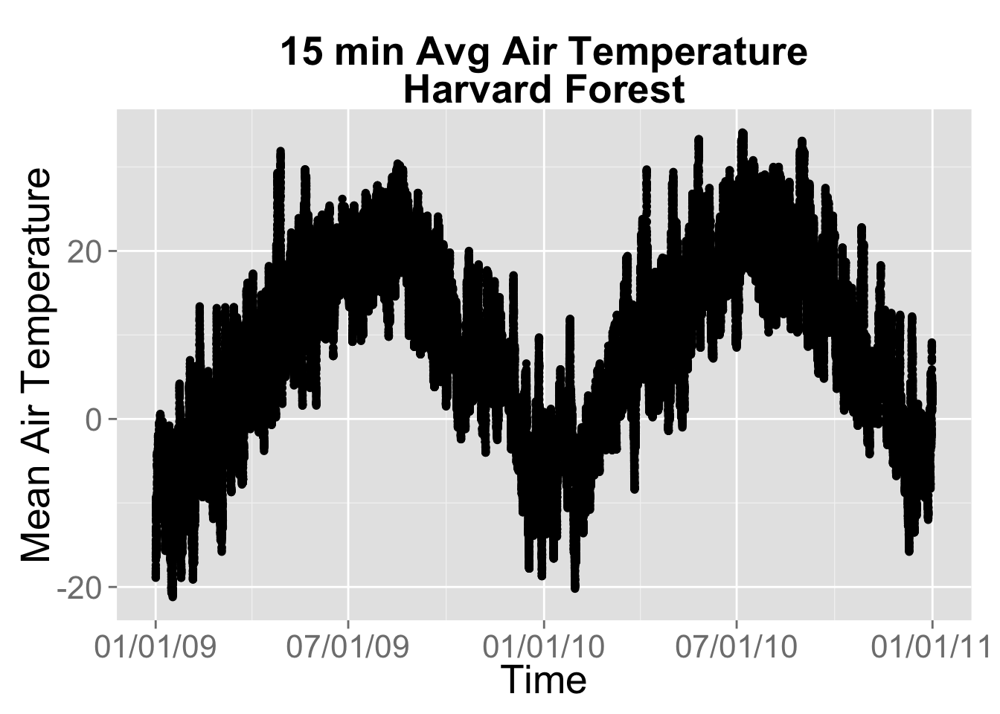
convert the data to daily average
#convert to daily julian days
temp.daily <- aggregate(yr.09.11["airt"], format(yr.09.11["datetime"],"%Y-%j"),
mean, na.rm = TRUE)
#not working yet - weird!
#qplot(temp.daily$datetime,temp.daily$airt)
#ggplot(temp.daily,aes(datetime, airt)) +
# geom_point() +
# ggtitle("Daily Avg Air Temperature\nHarvard Forest") +
# theme(plot.title = element_text(lineheight=.8, face="bold",size = 20)) +
# theme(text = element_text(size=20)) +
# xlab("Time") + ylab("Mean Air Temperature")
#format x axis with dates
#myPlot + scale_x_date(labels = date_format("%m/%d/%y"))Dealing with just date.
the POSIX format is good to go over…One option could be to do the averaging to daily on the data above. But you might need to smooth it so it could get complicated?
But calculating a daily average could be very useful! Just in case - we can include the daily average with the data if people get hung up or we need to skip over that part. I think we should do it.
#read in daily data
harMetDaily <- read.csv(file.path(dd, "AtmosData/HARV/hf001-06-daily-m.csv"))
#set the field to be a date field
harMetDaily$date <- as.Date(harMetDaily$date, format = "%Y-%m-%d")
#subset out some of the data - 2010-2013
yr.09.11_monAvg <- subset(harMetDaily, date >= as.Date('2009-01-01') & date <=
as.Date('2011-01-01'))
#as.Date("2006-02-01 00:00:00")
#plot Some Air Temperature Data
myPlot <- ggplot(yr.09.11_monAvg,aes(date, airt)) +
geom_point() +
ggtitle("Daily Air Temperature\nHarvard Forest") +
theme(plot.title = element_text(lineheight=.8, face="bold",size = 20)) +
theme(text = element_text(size=20)) +
xlab("Time") + ylab("Mean Air Temperature")
#format x axis with dates
myPlot + scale_x_date(labels = date_format("%m/%d/%y"))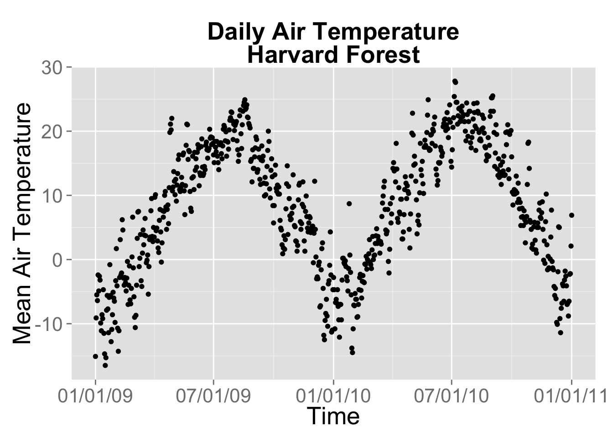
#plot Some Air Temperature Data
myPlot <- ggplot(yr.09.11_monAvg,aes(date, prec)) +
geom_point() +
ggtitle("Daily Precipitation\nHarvard Forest") +
theme(plot.title = element_text(lineheight=.8, face="bold",size = 20)) +
theme(text = element_text(size=20)) +
xlab("Time") + ylab("Mean Air Temperature")
#format x axis with dates
myPlot + scale_x_date(labels = date_format("%m/%d/%y"))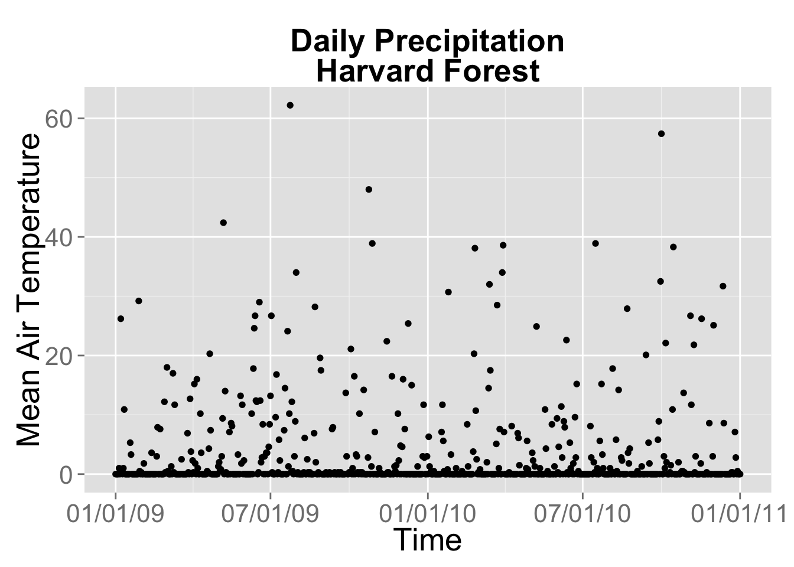
#plot Some Air Temperature Data
myPlot <- ggplot(yr.09.11_monAvg,aes(date, part)) +
geom_point() +
ggtitle("Daily Avg Total PAR\nHarvard Forest") +
theme(plot.title = element_text(lineheight=.8, face="bold",size = 20)) +
theme(text = element_text(size=20)) +
xlab("Time") + ylab("Mean Total PAR")
#format x axis with dates
myPlot + scale_x_date(labels = date_format("%m/%d/%y"))## Warning: Removed 1 rows containing missing values (geom_point).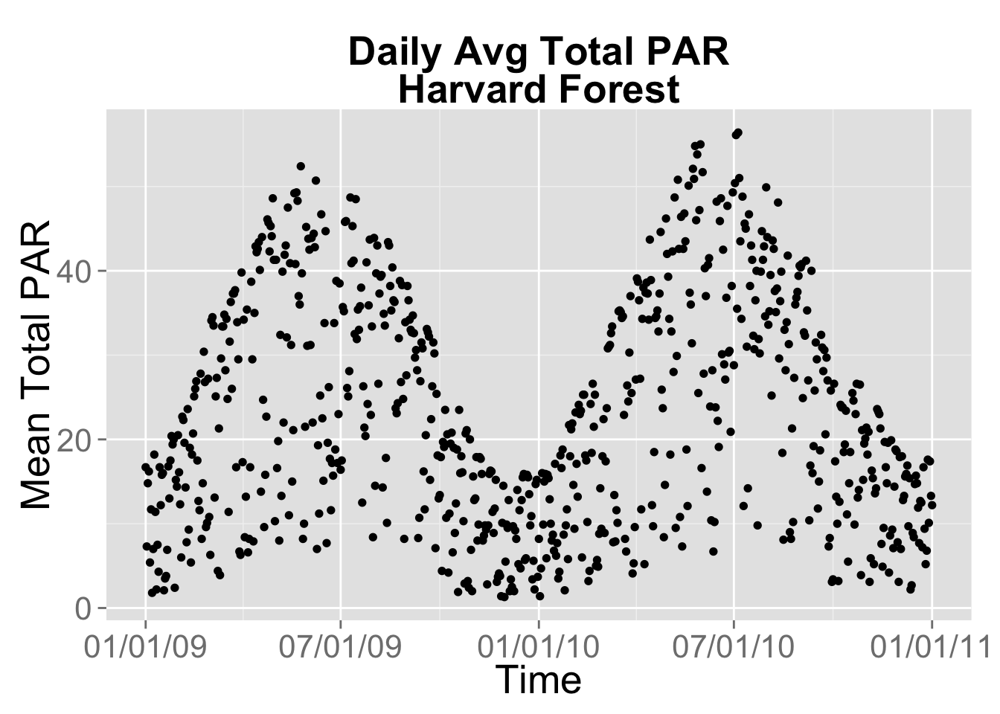
plot soil temperature
#
#plot soil temp data
myPlot <- ggplot(yr.09.11_monAvg,aes(date, s10t)) +
geom_point() +
ggtitle("Daily Avg Soil Temp\nHarvard Forest") +
theme(plot.title = element_text(lineheight=.8, face="bold",size = 20)) +
theme(text = element_text(size=20)) +
xlab("Time") + ylab("Mean Soil Temp")
#format x axis with dates
myPlot + scale_x_date(labels = date_format("%m/%d/%y"))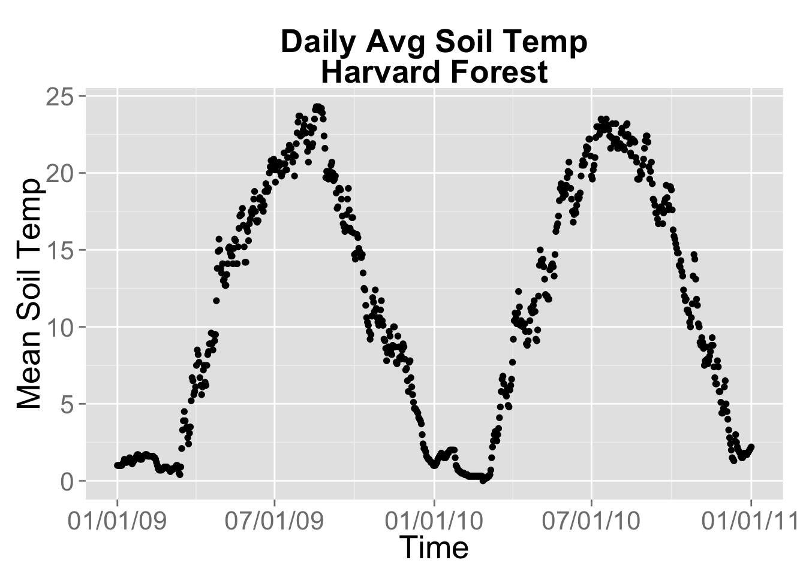
Convert to Julian days
Look at Day Length Data for Harvard
NOTE - i need to get the data from 2009-2011 to align with the Landsat Time Series
#load the lubridate package to work with time
library(lubridate)
#readr is ideal to open fixed width files (faster than utils)
library(readr)##
## Attaching package: 'readr'
##
## The following objects are masked from 'package:scales':
##
## col_factor, col_numeric#read in fixed width file
dayLengthHar2011 <- read.fwf(
file=file.path(dd, "daylength/HARV/Petersham_Mass_2011.txt"),
widths=c(8,9,9,9,9,9,9,9,9,9,9,9,9))
names(dayLengthHar2011) <- c("Day","Jan","Feb","Mar","Apr",
"May","June","July","Aug","Sept",
"Oct","Nov","Dec")
#open file
#dayLengthHar2015 <- read.csv(file = file.path(dd, "precip_Daylength/Petersham_Mass_2009.txt"), stringsAsFactors = FALSE)
#just pull out the columns with time information
tempDF <- dayLengthHar2011[,2:13]
tempDF[] <- lapply(tempDF, function(x){hm(x)$hour + hm(x)$minute/60})
#populate original DF with the new time data in decimal hours
dayLengthHar2011[,2:13] <- tempDF
#plot One MOnth of data
ggplot(dayLengthHar2011, aes(Day, Jan)) +
geom_point()+
ggtitle("Day Length\nJan 2009") +
xlab("Day of Month") + ylab("Day Length (Hours)") +
theme(text = element_text(size=20))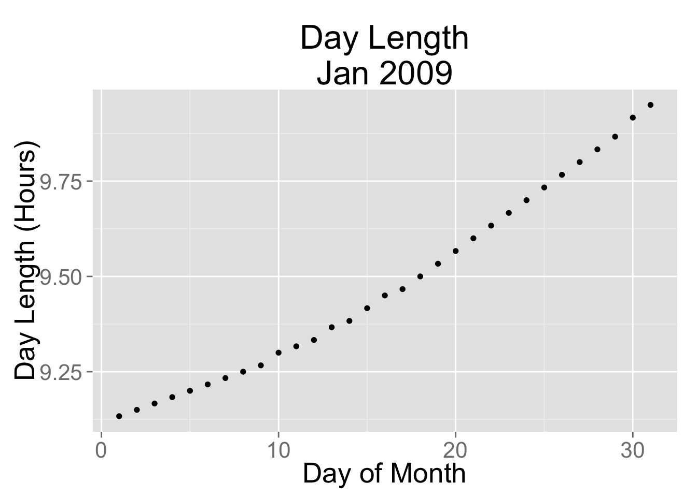
Convert to Julian Days and Plot
Next, plot full year’s worth of daylength for 2011. Note: this could be turned into a function to do multiple files.
#convert to julian days
#stack the data frame
dayLengthHar2011.st <- stack(dayLengthHar2011[2:13])
#remove NA values
dayLengthHar2011.st <- dayLengthHar2011.st[complete.cases(dayLengthHar2011.st),]
#add julian days (count)
dayLengthHar2011.st$JulianDay<-seq.int(nrow(dayLengthHar2011.st))
#fix names
names(dayLengthHar2011.st) <- c("Hours","Month","JulianDay")
#plot Years Worth of data
ggplot(dayLengthHar2011.st, aes(JulianDay,Hours)) +
geom_point()+
ggtitle("Day Length\nJan 2011") +
xlab("Julian Days") + ylab("Day Length (Hours)") +
theme(text = element_text(size=20))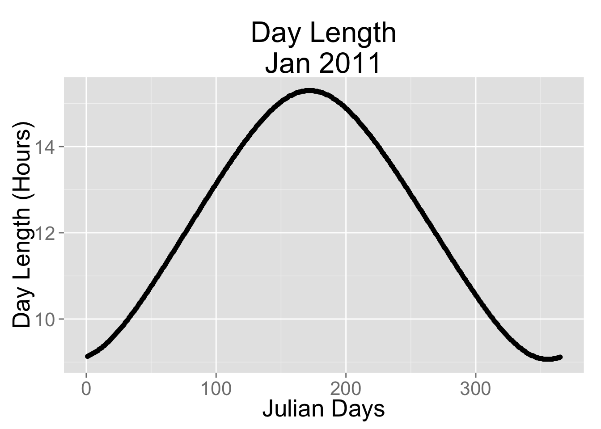
P5. Data Viz
Goal: Participants will know how create and customize maps of spatial data. Participants will know how to create multi-variable plots of spatial data.
Learning Objectives:
- Know how to create and customize a map in R
- Know how to plot multiple variables on a plot in R
Tasks: Create a classified map from a raster (tree height?) - (basic classification, mapping) Customizing a map Dealing with CRS issues (things don’t line up) Converting to online (leaflet?) Plot.ly for time series?? creating layouts with multiple plots
BE creative - have a look at the data. it might be cool for this group to put together the NDVI time series and other variables. Then make some cool maps and do something online (leaflet, plot.ly)
#Here are things to work on
# Creating a Map in r with a legend and multiple elements
# import the RGB base image, the shapefile, color the shapefile by atttibute
# add teh point, customize symbology, colors, labels, title, etc, add a north arrow
# SO imagine a GIS work flow but do that in R.
# Create a leaflet map showing something?? (optional but could be cool. would require
#converting to geojson potentially)
#customizing Ggplots and adding multiple variables that are different
#IE the dataframes can't be stacked.P7. An automated workflow
What if we wanted to turn the workflow above into a series of loops and functions that handled the data for multiple sites. What if we added an additional year’s worth of dat to each site?
processing the above for multiple sites – automating spatial analysis workflow in R
#end of sectionRemote Sensing Workshop
This group will build on items on the portal They will consider the arc of skillsets needed to work with HSI imagery and lidar starting from beginner to advanced. the materials below might fall somewhere in the middle with some beginner stuff?